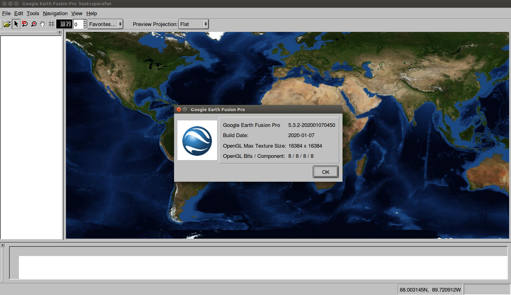
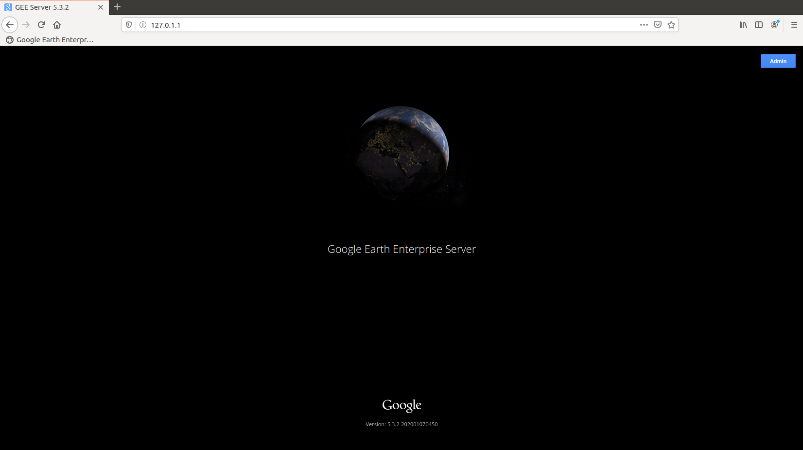

OpenGEE 编译与安装指南
一、前言
本文介绍 OpenGEE 的源码编译、文档编译、软件包构建、软件包安装及便携式服务器的构建与安装，主要参考来自 Github 仓库上的说明文档：
二、准备工作
OpenGEE 当前只支持在 64 位版本的 Ubuntu 16.04 LTS、RHEL 6、RHEL 7、CentOS 6 和 CentOS 7 的操作系统上进行构建，本文基于 Ubuntu 16.04.6 进行编译安装，参考 GEE Build Setup for Ubuntu 对 Ubuntu 环境进行初始化。
2.1 安装 Git
Ubuntu 软件仓库自带 Git，可直接命令安装：
| sudo apt-get install -y git
|
也可使用 Git 仓库安装最新版：
| sudo add-apt-repository ppa:git-core/ppa
sudo apt-get update
sudo apt-get install -y git
|
2.2 安装 Git LFS
执行如下命令安装 Git 大文件支持系统：
| curl -s https://packagecloud.io/install/repositories/github/git-lfs/script.deb.sh | sudo bash
sudo apt-get install -y git-lfs
|
2.3 处理依赖关系
编译 OpenGEE 之前需要安装好编译工具链和相关依赖库，注意只支持 Python 2.7：
1
2
3
4
5
6
7
8
9
10
11
12
13
14 | sudo apt-get install -y \
alien autoconf automake bison++ bisonc++ cmake doxygen dpkg \
flex freeglut3-dev g++ gcc gettext \
libboost-all-dev libc6 libc6-dev libcap-dev libfreetype6 libfreetype6-dev \
libgdbm-dev libgeos-dev libgeos++-dev libgif-dev libgtest-dev \
libjpeg-dev libjpeg8-dev libmng-dev libogdi3.2-dev \
libperl4-corelibs-perl libpng12-0 libpng12-dev libpq-dev libproj-dev \
libstdc++6 libtool \
libx11-dev libxcursor-dev libxerces-c-dev libxft-dev libxinerama-dev \
libxml2-dev libxml2-utils libxmu-dev libxrandr-dev libyaml-cpp-dev \
openssl libpcre3 libpcre3-dev \
python-dev python-imaging python-psycopg2 \
python-setuptools python2.7 python2.7-dev python-lxml python-git \
scons shunit2 swig xorg-dev zlib1g-dev
|
三、OpenGEE 编译
3.1 文件下载
下载 OpenGEE 发行版：https://github.com/google/earthenterprise/releases，注意：
- 不要使用国内 IP 克隆项目，龟速；
- 不要使用源码进行编译，因为源码不含
git-lfs 文件，无法成功构建。
本文使用稳定发行版 Open GEE 5.3.2 final release (build 5.3.2-1244.74) 下的 earthenterprise.5.3.2-1244.74.tar.gz 文件进行构建。
3.2 源码编译
OpenGEE 使用 SCons 构建源码，指令中有下列选项：
internal=1：用无优化的代码构建，最适合开发和调试；optimize=1：用优化过的代码构建，但会包含一些调试信息；release=1：用优化过的代码构建，不包含任何调试信息；build_folder=some_path：指定输出程序的放置目录，可以是相对路径或绝对路径。如果是相对路径，则它将相对于 earth_enterprise\src。若不指定，则使用默认路径 earth_enterprise\src；cache_dir=some_path：（实验性功能）应该是 SCons 用来缓存构建输出的绝对路径。当前，此参数应于使用 SCons 缓存测试构建。使用 SCons 缓存存在一些未解决的问题，那些正在研究这些问题的人可以使用此选项来测试其更改；-j#：指定处理器可并发核数，用一个整数代替 #，它应该大致匹配处理器可用核数；--debug=stacktrace：如果在 SCons 脚本中有一个错误，这个选项将给出关于如何调试它的更详细的信息；--config=force：如果不小心删除了 .sconf_temp 目录或对系统构建库进行了某些更改，请使用该参数来强制重新运行配置，否则 SCons 构建可能会抛出缺少库的错误。
本文使用如下命令进行源码编译：
| cd earthenterprise/earth_enterprise # 进入编译目录
scons -j4 release=1 build # 四核并发编译，视具体核心数修改之
|
等待约二十分钟，若看到如下信息，说明 OpenGEE 编译成功。
| sent 118,148,878 bytes received 1,599 bytes 78,766,984.67 bytes/sec
total size is 118,115,087 speedup is 1.00
Touch("NATIVE-REL-x86_64/bin/tests/fusion")
scons: done building targets.
scons: done building targets.
|
编译成功后可运行单元测试：
| cd src/NATIVE-REL-x86_64/bin/tests
./RunAllTests.pl
|
注意，cd 命令后面的内容要根据 SCons 参数进行适应性修改，若使用 internal=1 或 optimize=1 参数，而非 release=1，则 REL 需要修改（Ps：Tab 键补全来的更方便）。此外，若指定了 build_folder，则要修改测试目录所在路径。本文的测试结果如下：
1
2
3
4
5
6
7
8
9
10
11
12
13
14
15
16
17
18
19
20
21
22
23
24
25
26
27
28
29
30
31
32
33
34
35
36
37
38
39
40
41
42
43
44
45
46
47
48
49
50
51
52
53
54
55
56
57
58
59
60
61
62
63
64
65
66
67
68
69
70
71
72
73
74
75
76
77
78
79 | Running AssetDefsExtra_unittest ... SUCCEEDED
Running AssetFactory_unittest ... SUCCEEDED
Running AssetSerializer_unittest ... SUCCEEDED
Running bounds_tracker_test ... SUCCEEDED
Running boxfilter_test ... SUCCEEDED
Running cachedreadaccessor_unittest ... SUCCEEDED
Running crc_unittest ... SUCCEEDED
Running createmetadbroot_unittest ... SUCCEEDED
Running curl_request_unittest ... SUCCEEDED
Running cutspec_test ... SUCCEEDED
Running dbmanifest_tests ... SUCCEEDED
Running dbroot_generator_tests ... SUCCEEDED
Running dbroot_google_url_remover_test ... SUCCEEDED
Running dottedversion_tests ... SUCCEEDED
Running endian_tests ... SUCCEEDED
Running etencoder_tests ... SUCCEEDED
Running Featherer_unittest ... SUCCEEDED
Running file_packer_test ... SUCCEEDED
Running filebundle_unittest ... SUCCEEDED
Running filebundle_unittest__port ... SUCCEEDED
Running filepool_tests ... SUCCEEDED
Running geFileUtils_test ... SUCCEEDED
Running geImageWriter_unittest ... SUCCEEDED
Running geunittest ... SUCCEEDED
Running gstGeode_unittest ... SUCCEEDED
Running gstGeometryChecker_unittest ... SUCCEEDED
Running gstGeomUtils_unittest ... SUCCEEDED
Running gstPolygonCleaner_unittest ... SUCCEEDED
Running gstPolygonClipper2_unittest ... SUCCEEDED
Running gstPolygonUtils_unittest ... SUCCEEDED
Running idl_tests ... SUCCEEDED
Running IndexManifest_unittest ... SUCCEEDED
Running jpeg_comments_dates_unittest ... SUCCEEDED
Running JsUtils_unittest ... SUCCEEDED
Running khconfigparser_unittest ... SUCCEEDED
Running khfileutils_tests ... SUCCEEDED
Running khgdal_test ... SUCCEEDED
Running khMisc_tests ... SUCCEEDED
Running khStringUtils_test ... SUCCEEDED
Running khThread_unittest ... SUCCEEDED
Running khTimer_unittest ... SUCCEEDED
Running khxml_unittest ... SUCCEEDED
Running LeafAssetVersion_unittest ... SUCCEEDED
Running lockfileguard_tests ... SUCCEEDED
Running merge_unittest ... SUCCEEDED
Running multirange_tests ... SUCCEEDED
Running packetbundle_test ... SUCCEEDED
Running packetcompress_unittest ... SUCCEEDED
Running packetfile_unittest ... SUCCEEDED
Running parse-raster-project-xml-no-content_unittest ... DISABLED
Running performancelogger_unittest ... SUCCEEDED
Running polygontoqtnodes_unittest ... SUCCEEDED
Running polymask_unittest ... SUCCEEDED
Running portableglobebuilder_test ... SUCCEEDED
Running portablemapbuilder_test ... SUCCEEDED
Running procpidstats_unittest ... SUCCEEDED
Running projection_test ... SUCCEEDED
Running protobuf_unittest ... SUCCEEDED
Running qtutils_unittest ... SUCCEEDED
Running quadtree_builder_test ... SUCCEEDED
Running quadtree_utils_unittest ... SUCCEEDED
Running quadtreepath_unittest ... SUCCEEDED
Running rewritedbroot_unittest ... SUCCEEDED
Running segmented_array_tests ... SUCCEEDED
Running serverdbReader_unittest ... SUCCEEDED
Running sharedstring_unittest ... SUCCEEDED
Running simpleexception_unittest ... SUCCEEDED
Running StateUpdater_unittest ... SUCCEEDED
Running StorageManager_unittest ... SUCCEEDED
Running StorageManagerAssetFactory_unittest ... SUCCEEDED
Running StorageManagerAssetHandle_unittest ... SUCCEEDED
Running tile_resampler_unittest ... SUCCEEDED
Running tiledfloodfill_test ... SUCCEEDED
Running timeutils_unittest ... SUCCEEDED
Running tree_utils_unittest ... SUCCEEDED
Running uuid_unittest ... SUCCEEDED
Running verref_storage_unittest ... SUCCEEDED
Running WriterReader_tests ... SUCCEEDED
Running WriterReader_tests__port ... SUCCEEDED
|
除 parse-raster-project-xml-no-content_unittest 项测试结果为 DISABLED（原因待查），其余全部成功。
四、文档编译
4.1 处理依赖关系
OpenGEE 5.3.2 的文档已从 HTML 格式迁移到 RST（reStructuredText）格式，因此在编译文档前，需安装 Sphinx 依赖：
| sudo apt install python-pip
sudo pip install sphinx==1.7.5
sudo pip install GitPython
sudo pip install sphinxprettysearchresults
|
4.2 文档组织结构
OpenGEE 5.3.2 的文档组织结构如下：
- 包括主要主题所有索引文件的
index.rst 文件存放在 earthenterprise/docs/geedocs/docsrc 目录内；
docsrc/answer 目录下则存放有所有主题文件夹的索引文件；- 每个主要主题的具体文档都存放于
docsrc/answer 下的对应文件夹中。
例如，docsrc/index.rst 包含 fusionTutorial.rst（fusionTutorial 文件夹的索引文件），而 fusionTutorial.rst 则包含 fusionTutorial 文件夹中的所有 RST 文件。
4.3 文档编译
终端输入如下命令对 OpenGEE 5.3.2 的文档进行编译：
| cd earthenterprise/docs/geedocs/docsrc
rm -rf build # 若是编译修改后的文档，需删除之前的结果文件
make html
|
编译成功后，点击 docsrc/build/html/index.html ，则会通过浏览器打开说明文档。
4.4 更改文档
OpenGEE 5.3.2 的文档托管在 Github，用户可更新或增加现存文档（更改 RST 源文件），然后使用 Sphinx 生成 HTML。此外，还可通过 Git 将更改推送到 Github 仓库，详细操作参见：Build Instructions for Open GEE Documentation。
五、编译安装程序
OpenGEE 源码和文档编译成功后，还需要编译安装程序。目前安装程序已在 Ubuntu 14.04 LTS、Ubuntu 16.04 LTS、RHEL 6、RHEL 7、CentOS 6 和 CentOS 7 上成功测试。
安装软件包也是使用 SCons 构建的，默认的临时暂存区为 /tmp/fusion_os_install，由于缓存区在系统重启后会回收 /tmp/fusion_os_install，所以如果在构建好软件包后并未安装 Fusion 或 Server 就重启系统，重启后则需要重新构建安装软件包。可以通过指定 installdir=target_dir 参数来更改，其中 target_dir 为目标路径。但要注意，若修改了安装软件包路径，则后续的安装步骤必须使用相同的目录位置参数。
此外，在下面的命令中，可能需要将 release=1 更改为 optimize=1，具体情况取决于编译源代码时使用的参数，本文为 release=1。简而言之，应该对源代码和安装软件包使用相同的构建参数。
| # 准备教程文件, 也可手动下载（可选，若不准备，6.4小节无需安装）
cd ~/earthenterprise/earth_enterprise/tutorial
wget http://data.opengee.org/FusionTutorial-Full.tar.gz
tar -xvzf FusionTutorial-Full.tar.gz -C FusionTutorial
# 构建安装软件包
cd ~/earthenterprise/earth_enterprise
scons -j4 release=1 stage_install
|
至此，安装软件包构建完毕，Fusion 和 Server 安装程序使用此软件包来安装各自的组件。
六、安装 Fusion 与 Server
6.1 安装 Fusion
运行下面的命令安装 Fusion：
| cd ~/earthenterprise/earth_enterprise/src/installer
sudo ./install_fusion.sh
|
在执行安装命令前，可使用 -h 参数查看说明文档：
| sudo ./install_fusion.sh -h
|
本文输出结果如下：
1
2
3
4
5
6
7
8
9
10
11
12
13
14
15
16
17
18
19
20
21
22
23
24
25
26
27 | gee@spacefan:~/earthenterprise/earth_enterprise$ cd src/installer/
gee@spacefan:~/earthenterprise/earth_enterprise/src/installer$ sudo ./install_fusion.sh
Welcome to the Google Earth Enterprise Fusion 5.3.2 installer.
You have chosen to install Google Earth Enterprise Fusion with the following settings:
# CPU's: 4
Operating System: Ubuntu 16.04
64 bit OS: YES
Install Location: /opt/google
Asset Root: /gevol/assets
Source Volume: /gevol/src
Fusion User: gefusionuser
Fusion User Group: gegroup
Disk Space:
Filesystem Size Used Avail Use% Mounted on
udev 1.9G 0 1.9G 0% /dev
tmpfs 393M 6.2M 387M 2% /run
/dev/sda1 49G 14G 33G 30% /
tmpfs 2.0G 212K 2.0G 1% /dev/shm
tmpfs 5.0M 4.0K 5.0M 1% /run/lock
tmpfs 2.0G 0 2.0G 0% /sys/fs/cgroup
tmpfs 393M 60K 393M 1% /run/user/1000
X (Exit) the installer and cancel the installation - C (Continue) to install/upgrade.
|
若遇到如下错误：
| ****Welcome to the Google Earth Enterprise Fusion 5.3.2 installer.
The hostname of this machine does not match the fully-qualified hostname.
requires that they match for local publishing to function properly.
Exiting the installer. If you wish to continue, re-run this command with the -hnmf 'Hostname Mismatch Override' flag.****
|
参考 Open GEE 5.3.2 在 Github 上的 Issues #190 和 Issues #246，是由于本机 hostname 中含有大写字母引起的。参考 Ubuntu16.04修改主机名和查看主机名的方法 将本机 hostname 修改成全部连续的小写字母即可。
安装完成后，安装脚本已将安装目录（默认为 /opt/google/bin）下的文件添加到 /etc/profile.d 中实现环境变量设置，但需要重新登录或重启才会生效。此时，若想直接运行 Fusion，可将 /opt/google/bin 加入用户 bash shell 环境变量：
| export PATH=$PATH:/opt/google/bin
|
或更加彻底一些，将 /opt/google/bin 加入用户系统环境变量：
在末行加入：export PATH=$PATH:/opt/google/bin，然后更新环境变量：
此时，在终端输入 Fusion 即可启动 Fusion，默认界面如下图所示：

6.2 安装 Server
运行下面的命令安装 Server：
| cd ~/earthenterprise/earth_enterprise/src/installer
sudo ./install_server.sh
|
同理，在执行安装命令前，可使用 -h 参数查看说明文档：
| sudo ./install_server.sh -h
|
本文输出结果如下：
1
2
3
4
5
6
7
8
9
10
11
12
13
14
15
16
17
18
19
20
21
22
23
24
25
26
27
28
29
30
31
32
33
34
35
36
37
38
39
40
41
42
43
44
45
46
47
48
49
50
51
52
53
54
55
56
57
58
59
60
61
62
63
64
65
66
67
68
69
70
71
72
73
74
75
76
77
78
79
80
81
82
83
84
85
86
87
88
89
90
91
92
93
94
95
96
97
98
99
100
101
102
103 | gee@spacefan:~/earthenterprise/earth_enterprise/src/installer$ sudo ./install_server.sh
Welcome to the Google Earth Enterprise Server 5.3.2 installer.
Checking geserver services:
postgres service: false
gehttpd service: false
wsgi service: false
You have chosen to install Google Earth Enterprise Server with the following settings:
# CPU's: 4
Operating System: Ubuntu 16.04
64 bit OS: YES
Publisher Root: /gevol/published_dbs
Publisher Root Mount Point: /
Install Location: /opt/google
Postgres User: gepguser
Apache User: geapacheuser
Group: gegroup
Disk Space:
Filesystem Size Used Avail Use% Mounted on
udev 1.9G 0 1.9G 0% /dev
tmpfs 393M 6.2M 387M 2% /run
/dev/sda1 49G 15G 32G 32% /
tmpfs 2.0G 212K 2.0G 1% /dev/shm
tmpfs 5.0M 4.0K 5.0M 1% /run/lock
tmpfs 2.0G 0 2.0G 0% /sys/fs/cgroup
tmpfs 393M 60K 393M 1% /run/user/1000
X (Exit) the installer and cancel the installation - C (Continue) to install/upgrade. C
Proceeding with installation...
Copying files from source to target directories...DONE
Setting up system links...DONE
Starting server
waiting for server to start.... done
server started
Creating geserve-databases...
create_or_update_tables
-------------------------
(1 row)
create_tables
---------------
(1 row)
run_searchdef_upsert
----------------------
(1 row)
CREATE EXTENSION
Done.
waiting for server to shut down.... done
server stopped
upgrade done
pgsql_data
/var/opt/google/pgsql/data
The PostgreSQL component is successfully installed.
Setting up the geserver daemon...
GEE Server daemon setup ... DONE
Publishroot creation succeeded.
Please restart your server to apply the change.
# a) Start the PSQL Server
waiting for server to start.... done
server started
# b) Install GEPlaces Database
Creating GEPLACES database...
CREATE EXTENSION
# c) Install SearchExample Database
Creating SEARCH EXAMPLE database...
CREATE EXTENSION
# d) Stop the PSQL Server
waiting for server to shut down.... done
server stopped
Do you want to start the Google Earth Enterprise Server Service(y/n)?
y
--------------------------------------------------------------------
waiting for server to start.... done
server started
--------------------------------------------------------------------
Google Earth Enterprise Server for Ubuntu
Starting gehttpd: SetGlobeDirectory: /opt/google/gehttpd/htdocs/cutter/globes/
--------------------------------------------------------------------
Done Starting Google Earth Enterprise Server
Checking geserver services:
postgres service: true
gehttpd service: true
wsgi service: true
Congratulations! Google Earth Enterprise has been successfully installed in the following directory:
/opt/google
Start Google Earth Enterprise Server with the following command:
/etc/init.d/geserver start
|
安装好 Server 后可通过浏览 localhost（IP 地址为：127.0.1.1）打开服务器后台：

点击右上角 Admin 按钮，输入：
- Username: geapacheuser
- Password: geeadmin
即可进入后台。此外，可使用如下命令修改默认密码：
| sudo /opt/google/gehttpd/bin/htpasswd -c /opt/google/gehttpd/conf.d/.htpasswd geapacheuser
|
6.3 安装运行时依赖
OpenGEE 运行时依赖 Python 的 PIL.Image 模块，在 Ubuntu 上可安装 python-pil，在 Red Hat 平台上可安装 python-imaging。本文为：
| sudo pip install python-pil
|
6.4 安装教程数据
| sudo /opt/google/share/tutorials/fusion/download_tutorial.sh
|
6.5 卸载 Fusion 与 Server
若系统之前安装过早期版本的 OpenGEE，需要先将其卸载才能安装自建软件包。直接运行卸载脚本即可卸载 Fusion 和 Server：
| sudo earth_enterprise/src/installer/uninstall_fusion.sh
sudo earth_enterprise/src/installer/uninstall_server.sh
|
七、构建与安装 Portable Server
Portable Server 是 OpenGEE 的本地数据服务器，用于在无法接入互联网的情况下访问离线图像数据库。
7.1 依赖关系
Portable Server 构建依赖如下：
- Python 2.7
- Python pexpect installed
- Swig with support for Python
- g++ (4.8 or later)
Portable Server 运行时依赖如下：
- Python 2.7
- Python tornado installed
- Python Imaging Library (PIL) installed
7.2 Linux 下构建 Portable Server
首先需要处理依赖关系，确保系统安装有 Python 环境以及支持 Python 的三方模块 pexpect、tornado、g++ 和 Swig。Ubuntu 下通过如下命令安装（RHEL 和 CentOS 参见：Getting a Build Environment）：
| sudo apt-get install g++ python python-pexpect python-tornado libpython-dev swig python-psycopg2
|
随后运行 build.py 脚本进行构建：
| ~/earthenterprise/earth_enterprise/src/portableserver/build.py
|
该构建脚本将在 earthenterprise/earth_enterprise/src/portableserver/build 目录下生成两个文件夹和一个压缩文件，其中一个文件夹包含构建的安装文件，名称看起来像 portableserver-linux-5.3.2-20200102（文件名日期部分根据构建日期而变化），压缩文件与安装文件夹同名，格式为 .tar.gz，随后可使用安装文件夹和该压缩文件在具有 Portable Server 运行时环境的 Ubuntu16.04 LTS 上安装 Portable Server。
若构建过程中提示 ImportError: No module named getversion，则安装以下依赖：
| sudo pip install setuptools_scm
sudo pip install getversion
|
若想清除构建文件，运行：
| earthenterprise/earth_enterprise/src/portableserver/build.py --clean
|
7.3 Linux 下安装 Portable Server
**OpenGEE ** 团队目前没有为 Linux 发行版提供 Portable Server 安装包，需用户自行构建，并将在 Linux 上构建中生成的压缩包解压到本地磁盘。为了方便起见，还可以创建链接或 Shell 启动脚本。
注意，在运行 Portable Server 之前必须处理好 Portable Server 运行时的依赖关系。如果之前执行过 Linux 上的构建流程，则系统已经安装所有必需的依赖项。
7.4 Linux 下运行 Portable Server
切换到 Portable Server 安装包解压目录（如 portableserver-linux-5.3.2-20200102），运行：
| server/portable_server.py
# or
cd server/
python portable_server.py
|
用户可编辑 portableserver-linux-5.3.2-20200102/server/portable.cfg 和 portableserver-linux-5.3.2-20200102/server/remote.cfg 文件定制 Portable Server 启动设置。
7.4 Windows 下构建与安装 Portable Server
参见：Portable Server on Windows。
7.5 Mac OS 下构建与安装 Portable Server
参见：Portable Server on Mac OS。
当前，尚未测试在 Mac OS 上构建和运行 Portable Server 的过程。早期版本已在 Mac OS 上运行，并且 build.py 脚本含有未经测试的逻辑以运行 Mac OS 构建命令。但是，目前，用户必须自己修复在 Mac OS 上遇到的所有问题。
八、总结
本文根据官方说明文档在 Ubuntu 16.04.6 系统下实现了 OpenGEE 5.3.2 的源码编译、文档编译、软件包构建、软件包安装及便携式服务器的构建与安装，遇到的主要问题和解决方法如下：
- Github 仓库的克隆龟速，直接采用
build 发行版本进行构建；
hostname 需修改为不含大写字母的连续字符串，否则需加 -hnmf 标识。
更多关于 OpenGEE 的说明文档参见：Google Earth Enterprise Documentation。